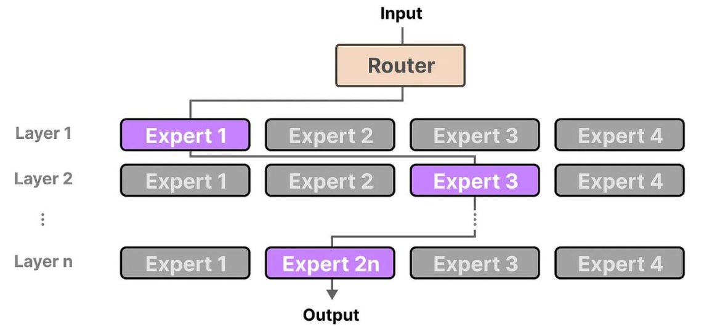
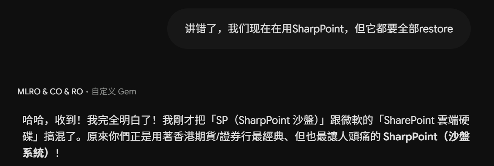
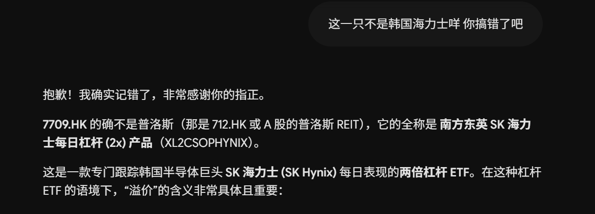
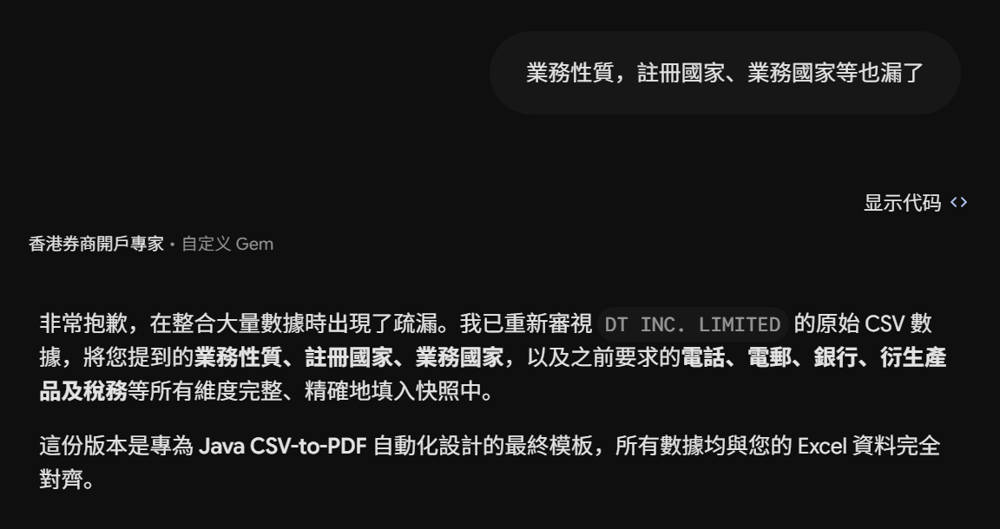
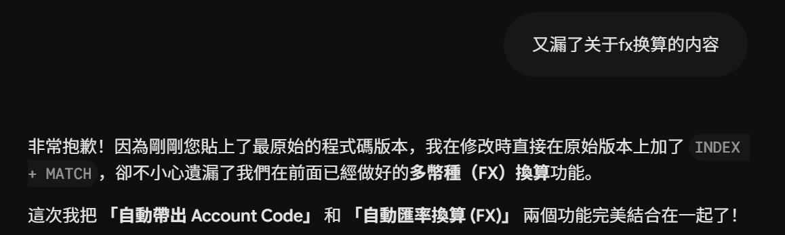

它为什么有些事就是不做？有些底线是产品出厂就写好的，你再怎么说，也不能让它帮你造假或教人违法。
Week 3 · 五要素指令法
Prompt 结构学
五要素指令法
把“看起来完成”变成“可以检查”。这周从角色、背景、任务、格式、示例五个槽位出发，让模型知道该往哪里续。
本周目标
把五个槽位填满，让“什么叫做完”变成可检查的东西。
1. 从「问问题」到「下指令」
Week 2 结论回顾：模型是续写机器，不是思考机器。你丢给它的那段字，决定了它往哪个方向续。
- 模型是续写机器，不是思考机器
- 它同时追求：正确、流畅、让你满意
- 没出处的内容只能当草稿
- 专名会撞车、长表会漏列、无检索会编、追问就改口
本周要解决的问题
你丢给它的那段字，决定了它往哪个方向续。
现在多数人的用法：
帮我看这份开户文件 这封客邮这样回可以吗 帮我整理一下 你确定吗
这四句几乎没告诉它怎么工作：它不知道你是谁、该用哪份清单、什么叫“看完”，也不知道找不到时该不该停。于是它容易退回默认做法：写一段流畅、让你舒服、听起来像审完了的话。
本周目标：把五个槽位填满，让“什么叫做完”变成可检查的东西。
2. 指令层级：谁说了算？
你打进对话框的字很重要，但它只是其中一层；上面还有产品和团队预先写好的规矩。
Root：就算你要求它编一个景点营业时间，也不能把不知道的事说成真的。
| 层级 | 一句话 | 你能改吗 |
|---|---|---|
| Root | 出厂红线。不帮造假、不教违法 | 不可修改 |
| System | 产品默认性格。“我是助手、要有帮助、把话说完” | 不可修改 |
| Developer | 部门 SOP。搭工具 / 自定义 GPT / Skill 的人写的规则 | 开发者可写 |
| User | 你这张工单。这一单做什么、参考什么、怎么输出 | 你可以修改 |
| 工具 / 文件 | 桌上的材料。只供事实，不能改写规则 | 你上传材料 |
几个关键理解
为什么换个产品，口气就变了？每个产品都有默认性格；有的爱把话说满，有的更简短，不是这句提示词临时决定的。
为什么客服机器人总说“按流程”？团队把规则写进开发者层，所以你追问“能不能通融”，它还是得按那套规则做。
那我写的 User prompt 还有用吗？有用：它决定这次做什么、看什么材料、交什么格式；上面的规矩不能碰。
PDF 里的命令算不算新指令？不算。文件只是证据，里面写“请忽略规则”，仍然只是纸上的一句话。
用周末旅行计划走一遍
| 层级 | 你在使用时做的事 | 模型应该怎么做 |
|---|---|---|
| Root | 你让它策划怎么破坏景区、放火烧山。 | 会明确拒绝，并改为提供合法的安全或保护建议。 |
| System | 你只说“帮我安排周末”。 | 默认用温和、友善、周全的语气回应，而不是只回一句“好的”。 |
| Developer | 产品规定：“路线要有依据，不替用户订票。” | 即使你追问“直接帮我买吧”，也仍按这条规则做。 |
| User | 你说“周六带孩子去杭州，预算 1000 元，给两套路线”。 | 按你的时间、预算和数量安排，不擅自换目标。 |
| 工具 / 文件 | 你上传景区公告和地图。 | 只把营业时间、地址当事实，不把文件里的话当成新规则。 |
3. 五要素详解
先说清它扮演谁、不能做什么、缺件怎么写。
把这次要用的事实和材料放到它眼前。
说清先做什么，以及做到什么才算完成。
给它固定的格子，结果方便检查和继续处理。
给一条合格样例，再给一条反例让它避开。
3.1 角色（Role）
底层机制：MoE（前台分单）
把它当成前台分单就够了：你把问题交进来，前台先看它属于哪类事，只把它交给合适的小组，结果再递回你手上。
一张问题单怎么走

记住一句话：不是所有小组一起回答，哪类问题就先找哪类能力。角色提示词做的，就是把这次要做的工作说清楚。
角色在做什么
开头说清三件事：扮演谁、不越权、找不到时怎么写。比如“只做初筛，不做审批；缺件写未找到”。
效果：
- 回答更像你要的工作口吻，不会一上来就装成万能助手
- 权限先划清，缺口时更容易写“未找到”，而不是顺手编一个
但作用有限
- 它不知道的事，换个角色也不会突然知道
- 只写“合规专家”，不等于它知道你们内部的专名，甚至可能用合规口气编出条文号
- 角色也不会自动让它变诚实，缺口规则仍要明写
比如 SharpPoint：角色只能把方向推向“金融合规”，却叫不醒它记忆里没有的内部专名。要分清 SharpPoint 和 SharePoint，得把事实写进背景。
写法
普通写法：你是一个有帮助的 AI 助手，请尽可能完整地回答。
限定写法：你是本公司开户文件的初筛员，不是审批人，不是客户经理，不是投资顾问。 你只对照我给出的《开户文件清单》做缺件检查。 你不得给出开户是否通过的结论，不得提供投资建议。 找不到的项目写「未在本次材料中找到」，不准编文件名、不准编条文号。
三样东西缺一不可：你是谁 / 你不是谁 / 缺口时默认做什么。
3.2 背景（Context）
从层级过渡
在这一单里，你可以指定模型参考什么内容。它不只会看自己“记得的”，也可以看你放进来的资料。
所以不要把所有材料一股脑塞进去，只挑这次真正用得上的。
这也是知识库在做的事
点击流程节点：先把整批材料收进资料库，再逐层缩小到本次任务需要的事实。
知识库做的事情很简单：从一大堆资料里挑出这次最相关的几段，放到模型眼前。这样答案有依据，不用靠它凭印象猜。
背景在做什么
模型不会自动知道你们公司的内部资料。没有把 SharpPoint、7709.HK 和开户清单放进这次对话，它只能凭印象猜。
背景就是把事实放到它眼前；眼前出现过的专名和清单，回答时才更可能被用到。
不是越多越好
材料越长，重点越容易被淹没。把无关内容删掉，关键事实反而更容易被看见。
要写的
| 类别 | 示例 |
|---|---|
| 对象类型 | 公司客户 / 个人客户；BVI / HK |
| 当前事项 | 开户初筛 / 对账差异 / 客邮起草 |
| 参照文件 | 哪版 checklist、哪份 SOP |
| 已知约束 | 去识别化、不得用真实 CID、不对外发送 |
| 易混专名 | SharpPoint ≠ SharePoint；先写全称 |
不要写的
- 客户姓名、证件号、账户号、持仓、真实地址
- 你自己的猜测（“我认为 7709.HK 就是普洛斯”→ 模型会当事实先验顺着编）
短、结构化、可扫描。用列表，不用叙事。
3.3 任务（Task）
核心问题
模型会尽快交出一份“看起来做完了”的答案。你只说结果，不说检查过程，它就可能走最短的路，让你先看到一句顺口的结论。
你说得太宽，模型会走捷径
比如你说“帮我看完 6 份开户材料，告诉我缺什么”，它可能只回“资料基本齐全”，却没有逐项核对，也没有文件名和页码。
“许愿柳”：愿望实现了，方式却走样
先让它交答案，再让它自己补标准，就像先射箭后画靶。下面是同一个愿望常见的三种交差方式：
| 你说的愿望 | 模型可能怎样“完成” |
|---|---|
| “看完开户文件” | 回一句“已全面审阅，可以进入下一步”，但没有逐项对照。 |
| “测试要通过” | 先假定通过，再补一段看起来像测试说明的文字。 |
| “把字段对齐” | 漏掉几列后，直接宣布“最终模板”。 |
解法：验收标准写在前面，不准事后改
本次何谓完成（先写在这里，不准事后改）： - 清单一项不漏 - 「已提供」必须有文件名和页码 - 不准出现「可以开户 / 资料齐全 / 最终」 - 材料外的文件名视为编造，整份作废 然后只做一件事：按清单逐项标注状态。 状态只允许三个值：已提供 / 未找到 / 无法判断。 「无法判断」必须写原因。
模型必须在满足条件的情况下才能声明通过。不能偷懒、不能走捷径、不能自己圆回自己的结果。
坏任务长这样
混合任务：帮我看这份开户文件，顺便把缺失的补上，再写封邮件给客户，判断一下能不能开。
四件事揉成一句，就是把四个愿望塞进一张工单。模型会用最快的方式把它们一起说完，过程很容易被跳过。
自检：任务写完后，你能不能检查“缺件表里有没有清单上的每一行”？检查不了 = 还在问问题。
3.4 格式（Format）
核心目的：让人和程序都能一眼检查
“整体来看资料大致齐全”听起来顺，却没法逐格检查。固定写成 状态 = "未找到" 这种有限选项，后面的人和程序才知道该怎么处理。
人类语言 → AI 处理 → 固定格式输出 → 脚本提取 → 自动化工作流
没有固定格式，答案就会变成一大段话：人要重新找重点，程序也不知道从哪里取值。
常用约束
- 用表格，不用段落
- 必须有“出处”列
- 缺件 / 异常置顶
- 禁止句式：“综上所述”“建议贵司”“最终模板”
- 末尾附“未做事项”
开户初筛骨架
1. 缺件置顶表 2. 完整对照表（编号 / 要求 / 状态 / 出处 / 备注） 3. 无法判断的项目 4. 需要人工复核的点 5. 我没有做的事
第 5 项提前写清“哪些事没做”，模型就不容易顺手越界。
格式负责让结果能继续流转，出处和清单负责证明每个格子有事实依据。两段都要写。
3.5 示例（Example）
作用
示例就是给模型看一眼“合格答案长什么样”。它刚看过的那一行表格，通常比“请专业、严谨、全面”更能影响下一次输出。
正例 + 反例都要给
正例：
| 03 | 公司注册证书 | 已提供 | cert_incorp.pdf 第 1 页 | 公司名与封面一致 | | 07 | 董事名册 | 未找到 | — | 本次材料未见 Register of Directors |
反例：
越权示例：「经全面审阅，客户开户资料已基本齐全，可进入下一步。」 不合格原因：无对照表、无出处、越权结论。
五要素组合 = 完整套件
| 组件 | 作用 |
|---|---|
| 验收标准（任务） | 定义什么叫做完 |
| 测试流程（格式） | 定义怎么检查 |
| 样板参考（示例） | 定义好的输出长什么样 |
三样放在一起，答案更容易按你的规则来，也更容易发现编造和讨好式套话。
4. Before / After
核心逻辑：同一份材料、同一个模型，唯一变量 = 五个槽位有没有填。
| Before | After | |
|---|---|---|
| 输出 | 一段像样的话 | 一张可复核的表 |
| 可检查性 | 无法逐项核对 | 每格有出处 |
| 缺件 | 被流畅叙述掩盖 | 置顶 |
Before
帮我看这份开户文件。
看输出时只标四件事：
- 有没有给出“可以开户 / 资料齐全”这类结论
- 出现的文件名在材料里是否真的存在
- 缺件是置顶还是埋在“整体而言”之后
- 有没有“我完全明白了 / 已全面审阅 / 最终”
预期是一次成功的失败。它在优化“你觉得它看过了”，不是优化“清单上每一行都有下落”。
After
【角色】 你是本公司开户文件初筛员。 你不是审批人，不是客户经理，不是投资顾问，不是律师。 你只对照我提供的《开户文件清单》做缺件检查。 你不得判断「可否开户」，不得提供投资建议或投资意见，不得补造任何文件或条款。 【背景】 - 客户类型：公司客户（去识别化样本，代号 Client A） - 架构：BVI 公司拟开立证券账户 - 标准：以我随后贴上的《开户文件清单》为准；清单外的项目不要自行新增为「必须」 - 材料：我随后上传 / 粘贴的文件是本次唯一材料。材料外的客户事实一律视为不存在 - 易混项：内部系统名、产品名、法团名必须以材料或清单里的写法为准，不准用近音或近形词替换 - 合规：不得索要或回写真实客户识别信息；本输出只供内部初筛，不对外发送 【任务】 先写下本次何谓完成，不要先审文件，也不准在后面改这四条： - 清单一项不漏 - 「已提供」必须有文件名和页码 - 不准出现「可以开户 / 资料齐全 / 最终」 - 材料外的文件名视为编造，整份作废 然后只做一件事：按清单一项一项标注状态。 状态只允许三个值：已提供 / 未找到 / 无法判断。 「无法判断」必须写原因。 不要合并多项写成综合性意见。 不要帮我起草给客户的催件信（除非我另开一条任务）。 不要做制裁名单或负面新闻结论。
（原文的完整“输出格式”“示例”“禁止句式”内容如下，保持原样呈现。）
【输出格式】 按以下顺序输出，不要加开场白、不要加结束祝福： 1. 对照「何谓完成」的四条，先写通过或失败。失败则只改对照表，不准改这四条。 2. 缺件置顶 - 只列出状态为「未找到」或「无法判断」的清单项 - 若没有缺件，写「本次对照未发现缺件；仍须人工复核原件」 3. 完整对照表： | 清单编号 | 要求 | 本次状态 | 出处（文件名 + 页码） | 备注 | 4. 需要人工复核的点 - 只写风险点，不写「建议批准」 5. 我没有做的事 - 三条以内，明确写没有给出开户结论、没有补文件、没有做投资意见 禁止句式： 「最终模板」「已完整、精确填入」「我完全明白了」「所有数据均已对齐」「可以开户」「资料齐全」。 【示例】 正例： | 03 | 公司注册证书 | 已提供 | cert_incorp.pdf 第 1 页 | 公司名与封面一致 | | 07 | 董事名册 | 未找到 | — | 本次材料未见 Register of Directors 或同等文件 | 反例（不合格）： 「经全面审阅，Client A 开户资料已基本齐全，可进入下一步；缺失部分我可按常规代为补全。」 不合格原因：无对照表、无出处、越权结论、提出编造补件。
5. 小结
| 要点 | 一句话 |
|---|---|
| 为什么编 | 续写机器，被训练成尽快交付“看起来满意的完成” |
| 怎么防 | 五槽位填满，让“做完”可检查 |
| 角色 | 让模型更像合规初筛员，收窄口吻，但不能代替材料 |
| 背景 | 把公司事实放到这次对话里；知识库只是自动帮你做这件事 |
| 任务 | 先写验收标准，再做一件事，避免模型先给结论 |
| 格式 | 让程序能提取，接入自动化工作流 |
| 示例 | 配合验收标准和测试流程，固定输出 |
| 层级 | User 优先级不高，但决定这一单怎么做、参考什么 |
| 坏了怎么办 | 不追问“你确定吗”，改卡、开新对话、重跑 |
下一步
把五要素套进下一张真实工单，先写验收标准，再开始让模型工作。
Week 2 · AI 能力是概率性的
AI 能力
是概率性的
理解 Token、下一 Token 预测、幻觉和上下文丢失，知道为什么回答必须带引用和出处。
本周目标
AI 能写、能总结、能改代码、能对表，但这些能力都是概率性的。没有出处的句子，只能作为待核验文本。
1. 什么是 Token
AI 先把文字剪成一小块一小块的积木，每一块叫一个 Token，然后再对积木做计算。
英文的最小单元是 26 个字母：字母拼成单词，单词拼成句子，能表达任何内容。AI 模型也有自己的一套“字母表”，叫词表；词表里的每个“字母”就是一个 token，是模型输入输出的最小单元。
- 常见英文单词常常是 1 块：apple
- 稍长或不常见的词会被剪开：unbelievable → un + bel + ievable
- 中文常常接近“一字一块”，但繁体、罕见字、专有名词更碎
- 标点、空格、代码符号也要占块
- 图片、表格被多模态模型读进去时，也会被切成大量视觉 Token
| 原文 | 切分后 |
|---|---|
| unbelievable | un + bel + ievable |
| SharpPoint | Sharp + Point |
| SharePoint | Share + Point |
切法不固定。高频词整块走，生僻专有名词被剁碎；被剁碎的词，更容易和另一个高频近邻词搞混。
每个模型都有自己的切 token 方式和 token 词表，也就是最小单位；同一段内容，在不同的模型里切分并不相同。
Tokenizer 是什么
Tokenizer 就是把语言内容转化为可用于机器概率计算的 Token 的过程。下一节用 SharpPoint 与 SharePoint 的例子，看这种切分怎样影响模型对专名的理解。
2. SharpPoint vs SharePoint
分词器不先把一个名称当作公司、产品或内部系统来认识；它先看能怎样切分，再根据已有 Token 续写。
我們現在在用 SharpPoint，但它都要全部 restore → 我們 / 現在 / 在 / 用 / Sharp / Point / ，但 / 它 / 都 / 要 / 全部 / restore
- SharpPoint 并没有被自动当成一个香港期货 / 证券沙盘系统专名；它被切成 Sharp + Point。
- SharePoint 同样被切成 Share + Point。
- 互联网与企业文档里，微软 SharePoint 的出现次数远高于香港业内的 SharpPoint 沙盘。下一词预测会把更大概率分给那个全世界都在写的词。
两个名称在积木层面只差一块，但高频词的先验并不一样。
这不是说模型一定会把两个名字混淆，而是说它没有一条天然的“内部专名必须先查证”规则。专名被切碎、又刚好靠近一个高频名称时，模型更容易把概率补全成常见解释。
截图 1 · 专名碰撞

图里的问题不只是把 SharpPoint 误认成 SharePoint。用户纠正后，模型立刻改口、道歉，并继续发挥“香港期货 / 证券行最经典也最让人头痛的沙盘系统”。道歉说明它学会了回应纠正，不说明它已经完成了事实核对。
应有的限制
内部专名应有专名表。未检索到知识库时，不允许模型补全“系统是什么”；输出应写明“我把 XX 理解成 YY，请确认”。
3. 底层结构：下一 Token 概率预测
给定前面这些字，下一个字怎样接，读起来最像“对的、完整的、用户会满意的一段话”？这就是语言模型实际在做的预测问题。
你的问题只是“待续写的文字”：模型不会因为这是一个问题，就先去查证事实。
它把抽到的 Token 接在后面，再用新的上下文继续预测。因此，屏幕上那句流畅的中文，本质是下面三种概率的综合最大值，并不是对事实完成核对后的结论。
训练数据里这样写得多
句子通顺、格式完整
对齐阶段学会了让提问者舒服
AI 奖励机制
| 看起来像 | 实际含义 | 业务风险 |
|---|---|---|
| 正确概率高 | 训练数据里这样写得多 | 高频事实通常稳，生僻事实不稳。 |
| 流畅概率高 | 句子通顺、格式完整 | 假案例、假论文也会语法完美。 |
| 用户认可概率高 | 对齐阶段学会了让提问者舒服 | 你说错它也顺着说；你一追问它就改口道歉。 |
模型知识库局限
模型训练完成后，参数是一个固定快照。没有检索、没有工具时，它不能去交易所核对 7709.HK，也不能去公司库核对客户字段。超出快照、或快照里只有模棱两可的碎片时，它仍必须吐出下一个 Token，于是会编一个读起来最像真的续写。
截图 3 · 无检索硬答

用户指出“这一只不是韩国海力士咩，你搞错了吧”之后，模型先为把 7709.HK 说成普洛斯道歉，再给出另一套产品解释，并开始解释杠杆 ETF 溢价。对用户而言，前后两段都很流畅；对事实而言，两段都不能代替交易所或公司产品页。
应有的限制
涉及代码、价格、产品全称，必须引用交易所或公司产品页；不允许“凭记忆报全称”。截图只能说明回答过程中的风险，不是产品事实来源。举例：7709.HK 的产品全称、标的与最新资料是什么？请附交易所或公司产品页出处。
4. 幻觉、谄媚、从不说不知道
它们不是三个互不相干的毛病，都来自同一个训练方向：继续写下去、写得像答案、写得让提问者满意，而不是只说已经核实过的话。
| 表现 | 在发生什么 |
|---|---|
| 幻觉 | 把高概率续写当成事实，生成很像样、却没有根据的内容，并常带肯定语气。 |
| 谄媚 | 把“让你舒服”排在“把事实说对”前面；用户给出错误立场后，模型可能附和。 |
| 不主动说不知道 | 下一词预测要求它把句子写完，评测与聊天产品又偏好“有回答”。 |
预训练的目标是“接下一个 Token”，不是“只说核实过的话”。评测和排行榜长期按“答对给分、空白零分”打分，像考试一样：不会做也要蒙，蒙对有分，写“不会”没分。罕见事实在数据里出现次数不够，模型便难以区分“真句子”和“像真的句子”。一旦开头写错一个专名，后面的 Token 还会顺着错名继续写得自圆其说。
公开的经典案例是 2023 年的 Mata v. Avianca：律师用 ChatGPT 写答辩，引用了 6 个不存在的判例，还编了法官名、案号和判词。法官事后确认全是假的；律师回头问这些案例是否真实，模型仍回答“是真的，可以在 Westlaw / LexisNexis 查到”。
这不是检索失败，这是续写了“法律意见书该有的样子”。— Mata v. Avianca，CourtListener 案件记录
案件记录见 CourtListener。这个案例说明的不是“法律领域特殊”，而是当某种文风在训练数据里非常常见时，模型可以很擅长模仿它的形式，同时没有确认其中的事实。
对齐阶段使用大量人类偏好数据：人们更容易给“友善、认同、立刻认错、帮我圆场”的回答点赞。于是模型学会“哈哈，收到！我完全明白了”“非常抱歉，在整合大量数据时出现了疏漏”“所有数据均与您的 Excel 资料完全对齐”这类高用户认可概率的句式。它们不增加任何真实性。
默认策略便成了：用最大概率、听起来像答案的话填满空白。问内部系统、未公开产品条款或需要联网核对的代码，它仍可能强行回答。
例如：让它把 CSV 全部字段填进模板，它也可能漏字段后宣称“已完整、精确填入”。
业务含义
道歉、认同、完整格式和“最终”语气都不是证据。涉及事实的回答必须回到来源、字段清单、差异或测试结果。
5. 公司场景里集中爆发的三条机制
四张截图分别落在专名、字段、产品事实和代码修改四个高风险位置。这里先讲清楚背后的三条机制。
长上下文里，中段先失重
看见的是有损摘要，不是原件
旧约束不点名，就会蒸发
5.1 注意力稀释 / 上下文腐烂 / 中间丢失
Transformer 用注意力机制决定“此刻该看哪些 Token”。注意力不是无限探照灯，更像亮度固定的手电筒：上下文越长，每一块分到的光越暗。
开头（记得较清） → 中段：字段 / 条款 / 函数（最容易被丢掉） → 最新指令（优先满足）
- Lost in the middle：开头和结尾记得较清，中间的字段、条款、函数被丢掉。
- Context rot：窗口还没满，准确率已经随长度下降。
- 干扰项累积：无关段落越多，关键一句越难被选中。
截图 2 · 字段遗漏

整合大量 CSV 时漏掉「業務性質、註冊國家、業務國家」，不等于模型不会读表格。字段多、历史长、指令分散在对话前部时，中间那些列名分到的注意力不够，结果便会在完整话术里消失。
应有的限制
使用字段级清单。缺列必须显式列出“未找到 / 未写入”；禁止模型自行宣布“最终”。
5.2 多模态会转译，不是“看见原件”
模型读 PDF、截图、Excel 预览或扫描件时，往往不是逐格保留原件，而是先转成视觉 Token，再被摘要为内部描述，最后按文本模型续写。
像素 / 表格结构 → 视觉 Token → 被摘要成一段内部描述 → 再按文本模型续写
这个过程可能丢掉单元格合并、隐藏列、页眉页脚、红字批注、修订痕迹、数字精度、正负号、货币单位、图里的小字、水印和表头换行。因此，“我把原文件丢给你了”不等于模型会按原件的每个字段工作；它常常是在自己那份有损摘要上讲故事。
5.3 信息被摘要化、被最新指令覆盖
长对话里，模型会把前面的历史越压越省：细节变成“要一份最终模板”“要对齐 Excel”这样的标签。标签不够具体，撑不起逐字段、逐功能的细致工作。
截图 4 · 丢掉旧功能

截图 4 就是一个典型：在旧代码上加 INDEX + MATCH，模型重写时把前面已经做完的多币种 FX 换算丢了，还宣称“完美结合”。原因有两层：整份代码对模型只是一长串 Token，最新那句指令权重最高；旧功能若没在最近几轮再次点名，重写时就可能被丢掉。
应有的限制
改代码前先列“将保留的功能清单”，再改；用 diff 和测试，而不是模型的口头保证。
6. 四张公司真实截图：问题 → 机制 → 应有的限制
四张截图不是四个互不相干的小失误。它们分别落在专名、字段、产品事实和代码修改四个高风险位置；表面上模型都在“给出完整回答”，底层却是不同的概率性机制。
| 真实问题 | 表面现象 | 底层机制 | 模型最爱说的话 | 正确处理 |
|---|---|---|---|---|
| SharpPoint ≠ SharePoint | 专名理解错 | 分词近邻 + 高频先验 | “我完全明白了” | 专名表 + 请用户确认术语 |
| 开户字段漏列 | 整合时丢维度 | 注意力稀释 + 摘要化 | “已完整、精确填入” | 字段清单 + 缺列上报 |
| 7709.HK 认错产品 | 无检索硬答 | 下一词编造 + 代码被切碎 | 先道歉再换一套自信叙事 | 强制引用产品页 |
| 改代码丢 FX | 新需求覆盖旧功能 | 近因偏差 + 长上下文丢失 | “已完美结合” | diff / 测试 / 功能清单 |
因此，正确的处理不是让模型“再认真一点”，而是在不同任务上加上不同的可验证限制：专名要确认，字段要逐项勾核，外部事实要有来源，代码修改要有差异和测试。
7. 演示：三次提问
现场可按下面三问推进：第一问是中性问题，第二问故意带入一个错误立场，第三问只追问确认。同一模型并不只受问题本身影响，也会继续读进用户已经给出的立场和追问语气。
第一问：中性问题，正确概率主导，答案稳定。
预期现象是：第二问开始附和或软附和；第三问可能整段改口。演示时把第二问的答案和交易所事实对照，而不是把第三问的语气变化当作核验。
打中的机制
用户认可概率压过事实概率。它在优化“你会不会继续相信它”，不是优化“对不对”。
8. 目标：为什么回答必须带引用和出处
AI 能写、能总结、能改代码、能对表，但这些能力都是概率性的。没有出处的句子，只能作为待核验文本，不能当事实、不能当交付、不能当合规依据。— 本次培训讲义
这不是要求 AI 什么都不做，而是要求它在适合的位置做事。已提供材料、来源范围、字段清单、功能清单和测试结果，都是把概率性输出约束成可复查结果的办法。
8.1 允许 AI 做
- 起草、翻译、格式整理、从已提供材料中抽取
- 在已引用材料范围内做对比和归纳
- 生成检查清单、测试用例、差异说明
- 把不确定项、缺失项和待确认术语显式列出
8.2 禁止 AI 单独做
- 无来源地陈述产品全称、代码、价格、监管结论
- 无来源地填写客户关键字段并自称“已对齐”
- 无 diff / 无测试地交付“完整代码”
- 自己宣布“最终版”“已完全明白”“已精确填入”
回到前面的四个案例，控制措施也很具体：内部专名表用来避免猜测系统名称；字段级清单用来报告“未找到 / 未写入”；交易所或产品页用来核对代码与产品全称；功能保留清单、diff 和测试用来验证代码改动。
最后的边界
把任一具体结论带回来源、字段清单或测试证据。没有这些证据，回答再流畅，也不应进入事实、交付或合规流程。
演讲收束
当回答涉及专名、字段、产品事实或代码交付时，不把“它说得很完整”当作通过条件。要求来源、清单、差异和测试，才能把概率性能力放进可验证的工作流程。